Introduction to LabVIEW#
Homework#
Homework
Using the functions shown here, create a signal with the prescribed parameters in LabVIEW (you can find your individual data in Moodle).
In a short report in the Jupyter Notebook environment (3 to 10 code cells), explore and show how to read and plot the saved signal in a programming environment of your choice (e.g., Jupyter Notebook). Submit the report as a .pdf file - see the instructions for submitting homework.
Bonus: Explore the use of a signal processing method of your choice (for example from the scipy.signal or scipy.fft module). Show how the method is applied to the saved signal.
NI LabVIEW is a graphical programming environment from National Instruments, intended primarily for signal acquisition, control of laboratory instruments, and automation. Although it is essentially a closed environment, LabVIEW supports various standard protocols besides communication with National Instruments hardware, and can therefore be connected to a wide range of other hardware.
The graphical programming language (also called “G”) is based on the flow of data, which the user routes to program elements by means of connections (wires). Each program element executes as soon as all the data it needs, carried by the wires, are available. Multiprocessing is also supported.
Software installation#
LabVIEW Community Edition
LabVIEW Community Edition is available free of charge for non-commercial use. It provides all the basic LabVIEW functions that we need in Signal Processing.
To install LabVIEW Community Edition on your computer, download the installer from the link above. The installation and activation instructions are in steps 1 and 2 at this link.
The first program#
The basic program structure is the “Virtual Instrument” (VI), which consists of a block diagram (Block Diagram) and a front panel (Front Panel).
An example of the simplest “Hello, World!” program in LabVIEW.
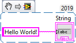
Note
LabVIEW can export a program as a .png image, which can then be loaded into a VI.
Export the selected elements as an image with Edit -> Create VI Snippet from Selection.
To import the VI, simply drag the image prepared in this way into the block diagram.
We run the program with the “Run” button at the top of the block diagram or the front panel.
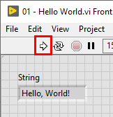
Useful shortcuts#
Shortcut |
Function |
|---|---|
|
Toggle between front panel and block diagram |
|
Show help |
|
Quickly add functions (Quick Drop) |
|
Remove broken wires |
|
Automatically arrange program elements |
|
Align selected elements in a row |
Programming in LabVIEW#
We can start programming in the block diagram, where a right mouse click opens the menu of program functions, or in the front panel, where a right click opens the set of controls.
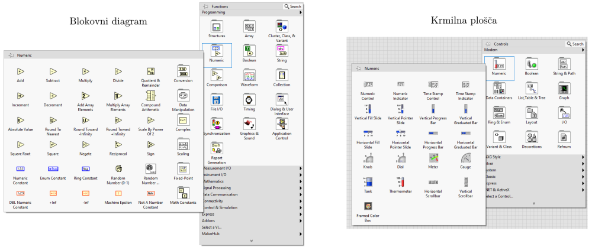
Changes in one view are automatically reflected in the other. We complete the addition of an element by connecting the elements in the block diagram.
Task 1
Let us create a LabVIEW program that shows on a gauge the speed value set with a slider, converting the value from [m/s] to [km/h].
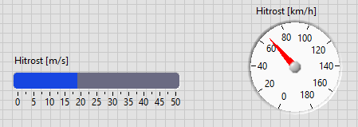
Note
We visualize the data flow and the order of program execution with the “Highlight execution” option:
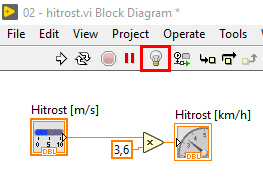
Data types#
As in most programming languages, data types are important in LabVIEW programs as well.
Conversion between compatible data types is automatic (Integer, Double). For conversion between some other data types we have to use the appropriate functions.
The conversion functions are found in the function menu of the block diagram, in the tab of the relevant data type (e.g., for conversion between numeric data and strings: String -> Number/String Conversion).
Task 2
Let us look at an example of a LabVIEW program that shows the conversion between the Integer, Double, and String data types.
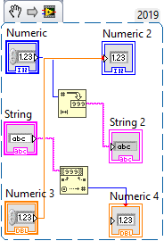
Note
If an error occurs when running the program, we can view the list of errors by clicking “List Errors”:
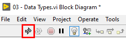
Subprograms#
A part of the program that we want to use several times can be packaged into a subprogram (Sub VI).
Select the part of the program that you want to package into a subprogram and choose Edit -> Create SubVI.
Task 3
An example of a LabVIEW program in which the part of the code that converts units in Task 1 is packaged into a subprogram.
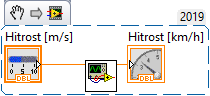
Note
After changing a subprogram, it is sometimes necessary to also update the link to the subprogram in the main program. To do this, right-click the subprogram icon and choose Relink to SubVi.
Control statements#
Control statements, as in other programming languages, affect the flow of execution of a LabVIEW program.
Control statements are found in the function menu of the block diagram, in the Structures tab.
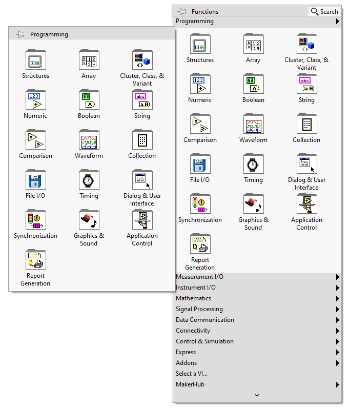
The Case statement#
In a Case statement, we decide, based on the selected condition, which of the predefined parts of the program is executed.
(The Case statement in LabVIEW is thus similar to the Python if statement.)
Task 4
Extend the unit conversion program from Task 1 with a Case statement, which uses a control switch to turn the unit conversion on and off.
Hint: You can start by adding a button in the front panel, which you later connect to the Case statement.
Task 5
We upgrade the subprogram from Task 3 with a Case statement. For this, we have to add an additional input parameter to the subprogram, which can be connected to a switch on the front panel.
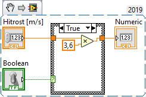
Loops (For, While)#
Loops are used for iterations, i.e., repeated execution of a part of the program.
The For loop#
For loops are used for iterating with an exactly defined number of repetitions.
Task 6
Let us create a for loop that iterates over an array of numeric values (Array).
The easiest way to prepare the array is in the front panel (the “Data Containers” tab), and to fill it with the desired controls (e.g., Numeric control).
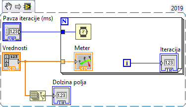
Task 7
Extend the speed unit conversion program from Task 4 so that it reads the speed values in [m/s] from a numeric array and, in a for loop, updates the gauge display accordingly.
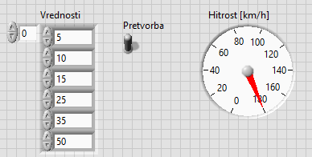
The While loop#
We usually use a While loop when we want to repeat the execution of the program until we stop it ourselves.
Task 8
Extend the speed unit conversion program from Task 4 so that it continuously checks the currently selected speed value in [m/s] and, in a loop, updates the gauge display accordingly.
Hint: All controls whose values you want to read continuously should be inside the loop.
Bonus: Try using a graph (Waveform Chart) instead of the gauge to display the value.
Signal generation#
Although we will usually use LabVIEW for signal acquisition, sometimes we also want to generate signals with it.
We can use the function “Simulate Signal” (Express -> Input -> Simulate Sig).
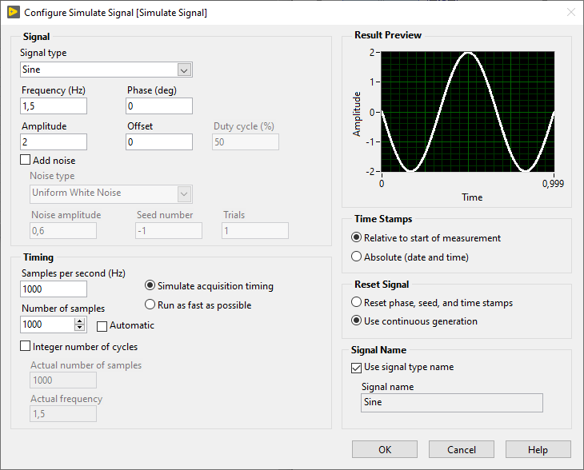
Task 9
Let us continuously generate and display on a graph 1 second (1000 samples at a sampling frequency of 1000 Hz) of a sinusoidal signal with a frequency of 1.5 Hz and an amplitude of 2.
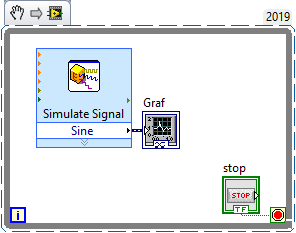
Saving data to files#
Although LabVIEW includes powerful functions for signal processing, in this course we will usually use other tools (Python) to process the acquired data.
We therefore want to write the data acquired with LabVIEW to files so that we can read and process them later.
A useful function for saving data in LabVIEW is “Write To Measurement File” (File I/O -> Write Meas File).
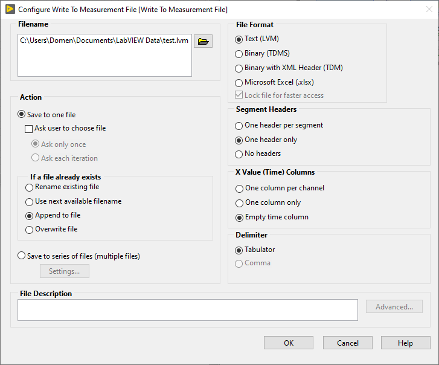
Task 10
Let us save the generated sinusoidal signal in text format (.lvm). We append the signal segments generated in the loop to the end of the file if it already exists.
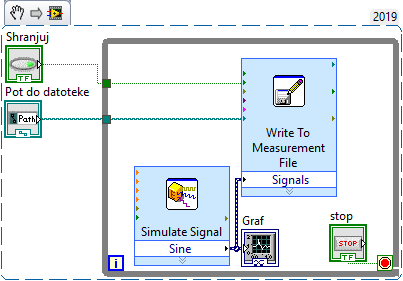
Note
To read the saved .lvm files in Python, you can use the lvm_read package. We also recommend looking at the example of use at this link. Basic use is shown below.
import lvm_read
file = '../data/01/sinus.lvm'
saved_data = lvm_read.read(file)
print(saved_data.keys())
dict_keys(['Decimal_Separator', 'Writer_Version', 'Reader_Version', 'Separator', 'Multi_Headings', 'X_Columns', 'Time_Pref', 'Operator', 'Date', 'Time', 0, 'Segments'])